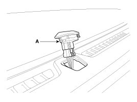

Ambient Light Sensor: Service and Repair
Inspection
In the state of IGN1 ON, when multifunction switch module detects auto light switch on, tail lamp relay output and head lamp low relay output are controlled according to auto light sensor's input.
The auto light control doesn't work if the pin sunlight supply (5V regulated power from Ignition 1 power to sunlight sensor) is in short circuit with the ground.
If IGN1 ON, The BCM monitors the range of this supply and raises up a failure as soon as the supply's voltage is out of range. Then this failure occurs and as long as this is present, the head lamp must be turned on without taking care about the sunlight level provided by the sensor.
This is designed to prevent any head lamp cut off when the failure occurs during the night.
Removal
1. Disconnect the negative (-) battery terminal.
2. Remove the auto light sensor (A) from crash pad upper side by using screw (-) driver.

NOTE:
Apply the protective tapes to auto light sensor and its related parts.
3. Remove the auto light connector.
Installation
1. Reconnect the auto light connector.
2. Install the auto light sensor.